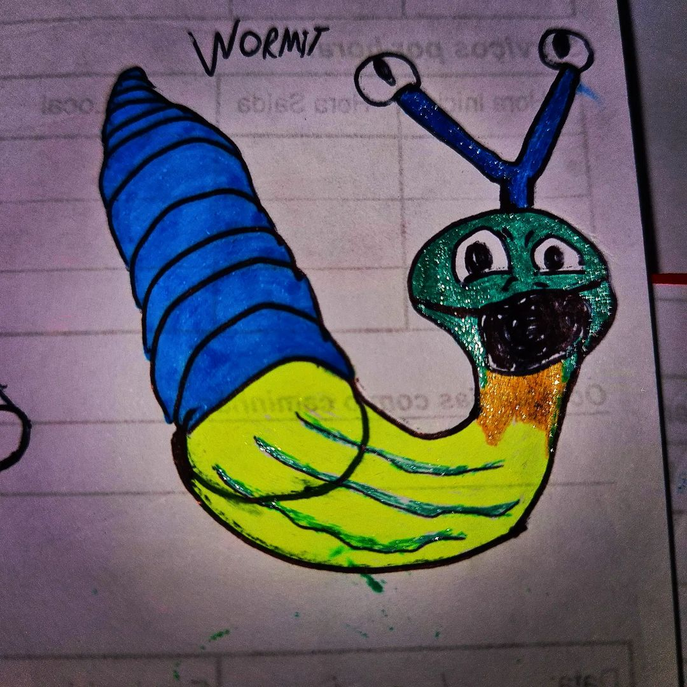
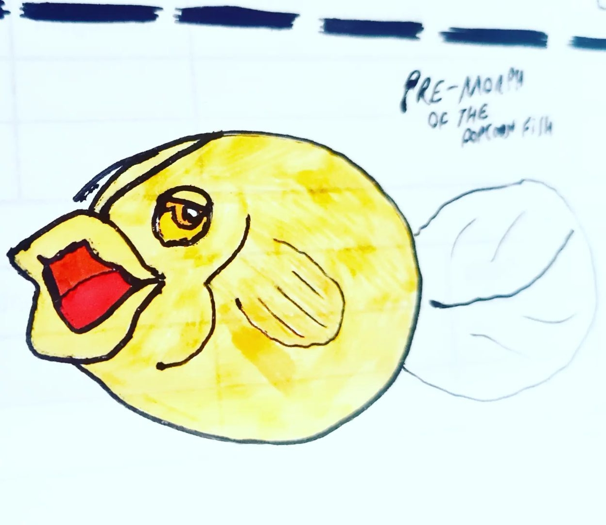

Navigation
- 1st generation - 2010-201110
- 2nd generation - 2012-201330
- 3rd generation - 2014-201515
- 4th generation - 2016-201722
- 5th generation - 2018-201940
- 6th generation - 2020-20213
- 7th generation - 2022-202352
- 8th generation - 2024-202515

1st generation - 2010-201110
20102
Oh mygush 🥺
I thought I would never ever fill the "2010" in Phonemons' list. This is a miracle
Thankfully I always liked to make public everything I do (even uggly unfinished things), so I shared these images on Messenger in the past.
In 2010 I was falling in love when I heard of the then cyan Nintendo 3DS (even nowadays I love Renault Zoe because it is cyan 💙💚). All I wanted was a metaverse (I didn't knew the word in the time being) 3D social Pokemon game. I've started a PowerPoint file describing the story, customizations and social features for avatars, new Pokemon attacks, etc.
In my innocency (at 13yo I did still had way more than 50% of the mind of a children), I believed Nintendo/GameFreak would read my suggestion about Pokemon Mercury & Ethanol and consider making the games...
I've even made the game boxes and the legendary mons. In the paper, I drew some of the starter Pokemons (Syamagma and Waterabbit), new mons and evolutions/pre-evolutions to existing mons. These papers were lost, but the legendary mons made in MS Paint had survived
20118


Back in 2011, Daniella Mesquita desisted proposing her creatures (her 2010's dream) and suggestions to The Pokémon Company, so Tamigucho/Phonemon gained its own franchise at the time called "Battmon" (battle monsters, in 2013 renamed to Phonemon and in 2016 to Tamigucho) and part of Plasmmer when it still was called "Plasma" before the franchise being moved from Plasmmer into Gamlr in 2013.
More 4 creatures from 2011 that I found today 26/05/2023:
These were found in this Nov 5 2011 video.
Tadpulo

Type: 💧 Water
Axul
.png)
Type: 💧 Water
?

Type: 🌿 Plant / â˜ ï¸ Poison
 (this creature become red when throwing this powder attack)
(this creature become red when throwing this powder attack)
Trianglelec

Type: ⚡ Electric
2nd generation - 2012-201330
20127
Leanatan
Type: 🕸️ Bug
Leizo then Leanatan had their third evolution stage: Leira. But I considered it weird so I didn't scanned it.
Trivia: this was based in an insect I saw in the "forest" of our house: it walked with its tail and its mouth/head, as if both were its foots.
05/16/22 maybeIMPORTANT DECISION: Leanatan will evolve to Wormorph?
Flaguppy
From /danimesq/art/Flaguppy-616848342. From /CdonAqUuRfB.Type: 💧 Water / 🔮 Psychic
The drawing in the left is from 2013 (1 year after Flaguppy was first introduced). The drawing in the right is from 2022 (10 years after Flaguppy was first introduced).
This mon was idealized (and drawn - but lost the drawing from then) in 2012, and re-drawn in 2013.
Flaguppy was re-made from scratch in 2022.
Flag 🳠+ Guppy ğŸ = Flaguppy
Flaguppies have a so big and colored tail, that they evolved/had adapted to become flags.
This @tamigucho does only thrives in predator-free environments, due to their attractive colors and sizes/forms.
A Flaguppy raised in an aquarium will remain small, but once released in the nature they grow enough to carry humans and medium-sized tamiguchos.
Their favorite prey are mosquito larvaes, and were adapted to survive in polluted environments.
They are able to display other colors and hypnotize using psychich 🔮 powers.
The base has been inspired by @kosta_dex's Bettunch:
https://www.instagram.com/p/B0hC0bulGuo/?igshid=YmMyMTA2M2Y=
💜
(Although my inexperienced drawing has slipped from its inspiration, looking more like a seal 🦠rather than a livebearer)
This @tamigucho does only thrives in predator-free environments, due to their attractive colors and sizes/forms.
A Flaguppy raised in an aquarium will remain small, but once released in the nature they grow enough to carry humans and medium-sized tamiguchos.
Their favorite prey are mosquito larvaes, and were adapted to survive in polluted environments.
They are able to display other colors and hypnotize using psychich 🔮 powers.
The base has been inspired by @kosta_dex's Bettunch:
https://www.instagram.com/p/B0hC0bulGuo/?igshid=YmMyMTA2M2Y=
💜
(Although my inexperienced drawing has slipped from its inspiration, looking more like a seal 🦠rather than a livebearer)
Branchierra
2023's redraw of a 2012's creature.
201323
Onionut
As Bulball was the first mon (and also the first characters to appear in Plasmmer - Plasma in 2011), in 2013 (which I consider the peak of Phonemon and its beautiest mons), I thought it deserved its evolutions!
Trivia: I've printed stickers of my favorite Phonemons of 2013. My school class colleague Paula loved Onionut so much that she brought it to her house to stick into the house's fridge.
[Super] Onionut
| Redrawn (2022) version by Adriano Dultra:
Dewhale
Dewhale was based in a character (PRB the whale) I draw since my age of 4 yo. I just changed the colors and the arms/legs.
2022's redraws where Dultrart's artwork was based-off:
Nearly 10 years after Dewhale first appeared, May 17 2022 it was redrawn and gained a tail. Should this design be kept or moved into a metamorphosis that comes from the 2013's Dewhale?

PRB (que meu pai chamava de Primeira Revista com Baleia) foi um dos primeiros (senão o primeiro) desenhos que fiz até hoje. Dewhale foi desenhado em 2013, quando imaginei como o PRB seria se fosse um Pokémon. PRB e Dewhale são de universos completamente diferentes; não significa que ambos não possam coexistir, ainda que separados.
Lizardeep
The drawing of the Dewhale's third evolution stage was lost. Like what happened to my 2010's papers, my 2013's papers were all lost but luckily I could recover the majority through scans available on Blogger; there's a possibility of more lost but RECOVERABLE mons so I'll futurely look at my Facebook Messenger media!
Through a look into my Messenger messages (by using search terms), I was able to find a screenshot containing Lizardeep's evolution (small resolution, but it exists!) 💝
It is uggly but at least I recovered a long lost thing:
"received_456397941127852" (undefined name)
Firember
Dogleed
Pandog
When there were wind storms in my city, I loved to release supermarket/mart bags and see'm flying; then Bagust was based on this fact. Its a bag who fly.
Gruboll
Boboll
Borboll
Paulavada
Its random name came from a joke my school class colleagues made in 2012. Please don't ask me in what person this mon is based off, pls 🙏

"Abelhinha" (undefined name)
Phonemons that were long thought to be lost, were recovered from my Messenger msgs 💝
Kornative
"early bird"/"Purple Bird" (undefined name)
According to what I said on Messenger, "Purple Bird" appears in the morning only.
Today at late night (after midnight) I started to think how "Purple Bird" appears only at morning and how it can't be found awaken in other periods. Idea I had: "Purple Bird" is flying non-stopping along late night, and only walks the land in the morning to eat before hiding to sleep.
Both "Abelhinha", Kornative and "early bird" share something in common: they weren't drawn at our house, but at the schoolclass in the morning.
Inflarat
As I told on Messenger, when I picked the paper I wasn't pretending to draw something like Inflarat. I just touched the paper with the pen and something random started to appear. I miss the times when my creativity flowed so easily 🥺💔
Carpretty
Re-draw of a mon submitted by an Internet friend. I do still have these Messenger messages stored so the history of this mon is fully preserved.
Nutiny
Nutall
Volcanut
Paguroil
The evolutions of Volcanut and Paguroil were lost in 2015/2016, together with all of the 2013's papers. 2016's Volcactus may be an answer to Volcanut's missing evolution!
3rd generation - 2014-201515
20146


All of the 2014's mons have something in common: all of them were drawn at the school class in the Eleodoro college.
This was one of the most toxic class I've studied, along with the 2011's (7ª A) class.
20159
I can't forget that a poor stranger brought back my lost phone I left in his Red Brasilia car, but my rich uncle never brought back my 2015's paper I left on his White Honda car.
The previous drawings of Voltiny, Volturbo and Volturbillion were lost in the same year they were drawn; I had to "re-draw" in the same year based in my memory. The original were drawn in January 2015 when I was hosted in the house of my poor uncle here.

Voltiny
Volturbo
Volturbillion
 From /CdrcY9dOieC.
From /CdrcY9dOieC.
Birdumont
Type: Normal / Flying
Birdumont is known as the best and most comfortable bird to fly, due to its size.
From /CdrTmiNuXdF. | 2.0 redrawn in 2023: From /Cu5VIRsvY-a.
From /Cu5VIRsvY-a.
Wormorph
Type (transformed): 💧 Water / ⛱️ Ground / 🉠Dragon
Wormorph is able to regenerate any part, and even to spawn new beings based on itself (even its lost parts can regenerate)
In addition to regenerating, Wormorph is able to transform into any existing tamigucho or form.
As a known Tami professor says: "not looking like a dragon doesn't mean a mon isn't a dragon. The Dragon type is on the DNA, not on the appearance".
Wormorph is part of a small group of Tamiguchos who have more than two types.


Birdumont and Wormorph (formerly Platrans) share something in common: both were initially drawn in pixels (MS Paint) and were made to test Phonemon Blue's features!
Both were re-drawn in 2022, and Platrans was renamed to Wormorph.
Creamini
Icecreamadam
Mistiny
Cloudust
4th generation - 2016-201722
201610
Etsect

Volcactus

Flashroom
Buzzaku
These mons were drawn when I was hosted in the house of my aunt in Curitiba, and they are result of one of the happiest times of my life. These mons have the spiritual vibes on my 2013's mons. The only mons that after 2016 came close to my 2013's mons, are the 2022's ones.
Shrimpider
Plantabacaxi
Wormud
Bulboll
Fortfly
Leafly
201712
Symbiant
Gastropad

Synapscizor
Ghostange
Pherreo
Lulala
Vamporo
These two mons were based in an international event happening in my city Curitiba, where later came the "plot twist" I was already aware of since the begin: it was the anti-corruption palladine vampire who was the corrupt 🤷‍♀️
"17076353_1815733805356407_5434443950947565568_n" (undefined name)
"16906845_386970035000124_6332974791720435712_n" (undefined name)

"IMG_20170605_0009" (undefined name)
"IMG_20170605_0011" (undefined name)
"IMG_20170605_0001" (undefined name)
5th generation - 2018-201940
201822
Nat
This mon was drawn in MS PowerPoint to be a SuperSticker (stickers that can reproduce) for my Communicator messenger project.
Bottlegg
This should be considered the official declared first Phonemon/Tamigucho of 2018 (because Nat originally wasn't made to be a mon).

"broken bottle" (undefined name)
Hey, fanfaremen: don't break beverage bottles in a party: you may discover an infuriated Tamigucho

Wheelama
Hmm, it looks like a wheel and a slug 😜
Jumpillar
Jumpod
Butterocket

Envelair
Probably this mon was made to introduce the paper type (as there's also the rubber elementar type).
Glasshield
Okay, I thought it was 2014 but it was 2018 which gave us the weirdest mons (also 2019 and 2020)
But here's the good news I noticed right now: their weirdness have the same vibes of my 2011's mons! 🪞
Shirtiny
Shirteen
I love how this mon is similar to 2013's Bagust 🖤💙
"Windwear" (undefined name)

"rubber horse 1" (undefined name)

"rubber horse/spider 2" (undefined name)
Probably this was a redraw of a 2015's lost mon (I wanted to make a rubber spider that works as a horse to transport ppl and stuff).
Floppyears
As Pokemon have Porygon and as in 2022's Tamiguchos we can have a pet rock, why not a psychic floating floppy disk? 💾
|Acedeesk
On the left, its original 2018 drawing. On the right, its 2023's redraw.
"seed" (undefined name)

"sand slug" (undefined name)
"tree slug" (undefined name)


"wanna walking seed" (undefined name)

"well walking seed" (undefined name)
Ameblast

First concept of the 2018's mons, in a draft

Draft and idea for Phonemon cards, the first time featuring the brand new Bottlegg 🍾
Some egg design for the 2018 mons
201918
q-Bit
Qrosstum
Shardy
Crabstone
Camerock
From /Cdl6VjlO48F. | Redrawn version by Adriano Dultra:

Above image is 2022's re-draw (added colors, new details and some changes).
Original drawing from 2019:
Potaseal
Type: 🌿 Plant / 💧 Water
Potaseal = Potato 🥔 + Seal ğŸ¦
Flappylipe
Lucaseal
Okay, Lucaseal will need a re-draw. Seriously.
"Flyineto" (undefined name)
"gamba" (undefined name)
Some of these mons will need a redraw, too.
Poopmon
"Amazing" how the 2019's mons started with q-Bit/Qrosstum and ended in IrmaosNeto/Poopmon :P
"muricoca" (undefined name)
"cicoco" (undefined name)

"little poop" (undefined name)

"tatu bolinha" (undefined name)

"tatu barata bezouro seila" (undefined name)
This mon may be removed or re-worked in the future.
"Digiminer" (undefined name)
This mon may be removed in the future.

"what what" (undefined name)
This mon may be removed or re-worked in the future.
Dogleed deserves an evolution but this mon isn't what I wanted. This is just weird
Some mons based in youtubers, others just usual mons and I love the usual mons 💖
Just a mass failed attempt to draw some mons based in the Felipe Neto's NetoLand

Brand new mons from 2019 <3

6th generation - 2020-20213
20202
There were Tamiguchos made in 2020, but they were lost (landlord in Curitiba probably vanished them bc even people he treated as trash, even more when it's not ppl but papers). Recovery possibility is very low.
Was it a curse on every start of a decade? My from-paper mons of 2010, also, I don't have 😜
20211

Femantis/Transect
Type: 🕸️ Bug / 🪽 Flying
7th generation - 2022-202352
202239
| From /Cbfpgs4OF2F. Redrawn version by Adriano Dultra:
Petalrock
Type: 🪨 Rock / 🌿 Plant
Petalrock, 2022's first Tamigucho
It's name is a mix between "petal", "pet" and "rock". Yes, it's meant to be a pet rock!
| From /Cbfr7UIu8m2.
Algalone
Type: 🌿 Plant / 👻 Ghost / 💧 Water
Algalone, pre-morph of Algalthea
They appears in nights of sunny days after rainy days. They can spawn from Petalrocks and other rock or cement type Tamiguchos
| From /CbfqtdQuuc6.
Algalthea
Type: 🌿 Plant / 👻 Ghost / 💧 Water
Algathea, metamorphosis of Algalone
When an Algalone wins against some other Algalones, they are mixed together and this symbiosis metamorphs into Algathea 💚
From /CdM0C13utJ2.
Wormit
Type: 💧 Water / 🕸️ Bug
It's name is a mix between "worm" and "hermit"
Wormit is a insect that inherited crustacean genes on its DNA (and Tamigucho biologists are still intrigued by that - so as they are about Mankeys and humans sharing Swinub DNA)
These worms finds an abandoned snail shell to make a house Wormit uses its caterpillar antenna to mimic eyes, so insect predators (such as birds) will think they are a snail/slug rather than an insect
They produce fat so their translucid body have a slimy texture so as snails/slugs do
As an intermediary between insects and crustaceans: Wormit may morph into an more insect form, more crustacean or both
Wormit's original rejected design:
 From /Cbfuis6OH-R.From /CbfyuVrOsfd. Redrawn version by Adriano Dultra:

Craboll
Type: 💧 Water / 🕸️ Bug
Craboll, metamorphosis of Wormit
It's a cocoon with crustacean shield/cover. Craboll can't move much, except the males' left arm.
From /CdcQq7QunQk.
Crabterfly
Type: 💧 Water / 🕸️ Bug / 🪽 Flying
This is the metamorphosis of Craboll
They can launch water gun beams directly from their hands
Quite resistant to ice
Crabterfly use its wings both to fly and to swim
By launching water pumps from the foots or hands, Crabterfly can swim at higher speeds
It uses its adapted mouths at flowers on land, and at reefs on sea
From /Cbi-vjoOU73.
Clameta
Type: 💧 Water / 🕸️ Bug
This is, aside with Craboll, one of the possible metamorphosis for Wormit; although this morph is more rarer among others.
It uses the very shell as a cocoon cover.
Unlike Craboll and most cocoons, this is completely unable to move.
From /CbigvZQunZ2.
Ancientrumphet
Type: 💧 Water
Ancientrumphet is a trumphet snail.
When wormit morphs, it leaves a shell; when this shell's DNA is clonned, you get an Ancientrumphet which was the original resident born with this blue shell.
Little is known about this Tamigucho, as it is pre-historic and clonning success rate is low; although its shells are still abundant in the sand areas.
From /Cblp7ipu9xr.
Dolphnia
Type: 💧 Water
Dolphnia is a daphnia who resembles a dolphin
It may morph into another crustacean, probably bigger
From /CcgMYiSObtq.
Funry ♂
Funry ♀
Original draft design for its tails:
From /CcgRFrYOYzT.Type: 🌿 Plant / 🧚‍♀️ Fairy
Funry is a mushroom fairy 🍄🧚‍♀️
It lives in lunar regions where Moon meteors/stones most usually falls.
Despite having the plant type, Funry have some characteristics from mammals
Its name (Funry) contains "Fun" of "Funghi" and "ry" of "fairy".
There are two types of Funry: yellow and pink
They appear at Mt. Coronoon, a mountain surrounded by the mystery of multiversal space/time distortions.
It is said that Funry's ancestor resembles like neither of the male/female variants we know nowadays.
In any lunar phase that isn't full-moon, they hide and hibernate as if it were winter; but at full moon, they plays as if it were summer. It is said they do photosynthesis through the moon rather than the sun. This photosynthesis is done thanks to them producing sugar instead of sweats when playing.
From /Cdhdve3OGWG. Redrawn version by Adriano Dultra:
 (will be its form when two Sprouterra merge before morphing)
(will be its form when two Sprouterra merge before morphing)
Sprouterra
Type: 🌿 Plant / ⛱️ Ground / 💧 Water
It is a ball of dirt with a happy sprout ball growing inside it.
Sprouterras are distributed in Earth Day events as a symbol of soil & plants health.
The world environment conservation organization that promotes Sprouterra says: "If forests were as cute as baby cats, people wouldn't destroy it; that's the idea of Sprouterra"
Sprouterra morphs into its nymph, Poterra, before taking into the adult stage.
Sprouterra is the first mon to have three elementary types and lose one after morphing.
All of the life of Sprouterra is inside water. When they gets out of water by their own, it means Sprouterra is ready to metamorph into its nymph: Poterra.
Reproduction: No.
From /CdhbJNXOU6g.
Poterra
Type: 🌿 Plant / ⛱️ Ground
It makes its own children by taking from its own dirt and molding in their own hands. The sprouts in this handmade ball will give life to Sprouterra.
The grass in the head is the crown of Poterra, but also contains its vegetable brain.
Poterra is exclusively diurnal and depends on a sunny day for reasoning properly (as its brain depends on the sugar the grasses produces through photosynthesis).
Together with earthworms, Poterras are essential for soil & sprouts development.
This Tamigucho is gifted on the Earth Day as a convention (and as gratitude for keeping the Earth & Nature healthy 🤎💚
Reproduction: Independent/autonomous.
Lay type: Not eggs but babies.
From /CdjDpivuIg4. | Redrawn version by Adriano Dultra:

Treearth
Type: 🌿 Plant / ⛱️ Ground
This is the adult form of Sprouterra.
Treearth comes from Sprouterra's nymph: Poterra.
After morphing, Poterra's face returns to its cute form of baby.
Sometimes Treearth can't breathe healthily, because it adapts its Carbon or Oxigen production according to the environment's needs.
When there's a disbalance on the nature, it affects Treearth's health which in turns affects the health of all other living beings.
Treearth is an aim for thunders, but its ground type is an effective defense against electricity.
When you see a tree, it may be a Treearth, as it hidden its face using a wooden faceshield.
If a Treearth is comfortable and revealed, usually they likes to play yo-yo using a leaf ball and a insect sting.
There's different types of Treearth: with green/red apples ğŸ, with oranges 🊠and lemons ğŸ‹, grapefruits ğŸ‡, etc.
 From /Cfsvohyu_Lv. | Redrawn version by Daniella Mesquita derivated from Adriano Dultra's artwork for Popcanth:Celacorn
Type: ? / ?
After being in contact with the power of a fire Tamigucho, they morphed into Popcanth.
It is believed that ancient civilizations discovered the popcorn thanks to the now extinct Celacorn and Popcanth.
From /CdjFRDyOKAS. | Redrawn version by Adriano Dultra:


Popcanth
This fish mon is based in a saved popcorn I found cute and looked like a fish
From all of the Phonemons/Tamiguchos, this is the first to be originally made in "3D".
From /CeMOPbKO-ne and /CeMPwyXOf38.
Dragonymph
Type (diurnal): 💧 Water / 🕸️ Bug / 🔥 Fire
Type (nocturnal): 💧 Water / 🕸️ Bug / 🌘 Dark
1st image: diurnal variant.
2nd image: nocturnal variant.
Dragonymph lives its entire life in the water, and hunts prey in a lightning speed.
Acknowledging so, its also one of the fastest swimmers; all that despite being a bug, with a shrimp-like living.
From /CeMckagOAhu.Froquirrel
Type: 💧 Water / ⚡ Electric
Frog 🸠+ Squirrel 🿠= Froquirrel
Instead of storing nuts, Froquirrel stores water on its translucid blue, balloon-like cheeks.
Its belly stores electricity.
The only furry part of its body is its striked back, which is able to launch electric beams; the rest (except the rubber-like cheeks) resembles the skin of reptiles.
Aphidrink
Type: 🕸️ Bug
This tamigucho loves to absorb sugar from Funries and convert into an nutritious milk that some insects love to drink.
First concept design/draft:
From /CeW_oz2uBbl.Re-design/upgrade process:
From /CeXRTtYu_xz. From /CeXRTtYu_xz:Aphidrink's face-lift
This is now the definite, upgraded design for Aphidrink's face (and also a definite nomenclature)!
Before attempting to redraw a whole thing, first I did a trial/error/improvement training for its eyes and nose/mouth, for then adding all that to its face.
A fragmented/partitioned refinement process that proved effective!
Similar process I did when composing Flaguppy: https://www.instagram.com/p/CdonAqUuRfB/?igshid=YmMyMTA2M2Y=
From /Cehyji_uRq3.
Upcoming/draft mons that were result of a creativity block and headache I had.
I have a nephew who was raised to like monstruous creatures and he said these four mons are "legendary": which means I have a lot to change on these.
Upcoming Tamiguchos and their alpha/beta design
1:
A parrot or a cat? This is the question about Lorikat.
2:
Based on that long-legged, flat spiders who thrives just everywhere
3:
An antenna that gets broadcasting from the space and interferes on nearby TVs
4:
Spinut; it's name is suggestive/intuitive
There's a month since the "Lorikat" name first appeared in my ideas.
That spider? I thought about it today after seeing one of these spiders around while I was washing my hands (this spider is still well, btw)
The antenna 📡 and Spinut? Thought about them while live drawing/flowing (spontaneous).
From these four, only two have defined names: Lorikat and Spinut.
Also, Spinut is the only one with a clear insight about its finished design.
From /Cer9_eXuKWq.Spinut and the antenna Tamigucho were re-drawn. Spinut is closer to a finished design. The antenna Tamigucho will be completely redrawn from scratch and named Beetenna.
From /Cer9_eXuKWq:Re-design
Spinut and the antenna 📡 Tamigucho went into a redesign
Their design may improve even more until a MVP is reached
Spinut
Type: 🌿 Plant / 🥊 Fighting
"Antenna"
Type: ⚙️ Steel / 🥤 Plastic / 🔮 Psychic
From /Ce6psqtODa-.
Starecover
Type: 🔮 Psychic / 🧚‍♀️ Fairy
This is the first "UltraBlackholer" (this nomenclature may change).
When Starecover sees petrified beings, it cries; its crying have the power of reviving and piercing rocks 💧🪨
From /CfDKnOwOAl-.
Papito
Type: 📄 Paper
It is the pre-morph of Bladleaf and Judoffice.
When it reaches a specific level and have the attack greater than defense, it morphs into Bladleaf.
If it is the defense greater than attack, it morphs into Judoffice.
From /CfDKJz2uPOG.
Judoffice
Type: 📄 Paper / 🥊 Fighting
It is formed of various strong sheets of papers.
Judoffice is known to be harder than a rock despite being just a paper.
From /CfCvoamO9_q.
Bladleaf
Type: 📄 Paper / 🥊 Fighting
[PLEASE: Its not white bc I've missed coloring; Bladleaf is based on a paper]
Its still a mistery for the science how Bladleaf's organism can function in a so flat body.
Bladleaf uses its back helical leafs to do short (but fast) flights while fighting.
It's leafs are so slim, light-weight as a graphene sheet, that they are able to cut better than a sword while being just a paper.
From /CfHrZi6ObCy.
Soldiper
Type: 📄 Paper / 🥊 Fighting
When Papito's defense is equal attack, it morphs into Soldiper.
From /Cfc0Sr8OrT0.
Ziraldonkey
Type: ⚡ Electric
This monkey have the ability to play with anything. Their pranks amazes because of the creativity used.
Are known for their inventiveness, sagacious smartness and agility.
They use a pan/boiler as hat, and always surprises on new uses for it.
From /CfslM54OUtK.
Ghostoillet
Type: 👻 Ghost / â˜ ï¸ Poison
Ancient civilizations have spread the myth that toilets left unflushed were possessed by a spirit, originating in Ghostoillet.
From /CfEa0yGu33p. Redrawn version by Adriano Dultra:

Poltoilleist
Type: 👻 Ghost / â˜ ï¸ Poison
From /CfHRcxCOg10.
Bittlelittle
Type: ⛱️ Ground / â˜ ï¸ Poison
Bittlelittle uses its fingers to throw venomous mass.
[PERSONAL NOTE]: I hope Bittlelittle never makes its way into an actual, official Tamigucho
From /CfKmbkLOHog.
??
Type: 🥊 Fighting / 🌘 Dark
This cat have the power of foreseeing and manipulating the future.
It have a hidden DNA of the psychic and light types.
From /CfLAtdJuzmp.
New Tamiguchos
Papirdo [Alpha/Beta design]
Type: 📄 Paper / 🪽 Flying
Sindcube
Type: 💧 Water / ⛱️ Ground
When Sindcube's egg hatches bellow the sand, a cube-headed turtle emerges. If for any reason or event Sindcube loses its head cube, it digs its head in the sand to recover it.
Micromacro (Bacteria Form)
Type: 🔮 Psychic / 🧚‍♀️ Fairy
This tamigucho have the power to maximize or minimize its size according to its needs. Micromacros in the Virus Form may maximize and appear after people or tamiguchos sneezes
From /CfPreQqObLG.
Femantis
Type: ? / ?
A myth is spread that it is Femantis who spread the spirit of feminity and the parental feelings + care.
One of the covers for Tamigucho Pink & Blue
Surfish
Type: 💧 Water / ?
Alternate metamorphosis for Dewhale.
From /Cf5RzbcOR9i.
Pitwo
Type: 💧 Water / 🔮 Psychic
Right before hatching, their tail jumps out as if it were a gecko, and is ready to be used to surf
202313
Birsh
Type: 💧 Water / 🪽 Flying
This @tamigucho is the 2023's first to be drawn.
Birsh is a bird that, like mammals such as dolphins, adapted to live in seas like fishes.
It adapted to live 24/7 in the water by creating an air bubble that also protects their tamers when traveling underwater; this air bubble is created by a symbiosis with another tamigucho
Birsh is also known as "the aquatic Birdumont".
??
Type: 🔥 Fire / 🪽 Flying
A fire lion @tamigucho in its middle and adult stages.
On its final morph, from its back it hides wings on its fur.
Book-a-boo
Type: 📄 Paper / 👻 Ghost
This @tamigucho, when open, become powered by the spirit(s) of the author(s) of a book.
It is said that when a book isn't open for years, it gains life as a book-a-boo
Petalrock: Strawberry variant
Type: 🌿 Plant / 🪨 Rock / 🧚‍♀️ Fairy
The Petalrock @tamigucho, but 📠version 🩷ğŸ¤
Neurus
Type: 👻 Ghost / ⚡ Electric
Neurus has the ability to possess any inanimate object.
It does that through atomic merging.
Once merged with an object, Neurus turns excessively attached to it and once in a blue moon will leave it.
Nyaqua
Type: 💧 Water
Despite being a Water type Tamigucho, Nyagua rather for being dry externally; although it is an excellent swimmer.
The tip of its tail may be a reminiscent of its ancestors.
Camunlongo
Type: 🔘 Neutral
This tamigucho has the ability to increase its width by more than 2 meters anytime it wants to, both for its body and its tail.
Because of its strong body and rope-like tail, Camunlongos are commonly used in rescue operations.
Bouldegg
Type: 🌿 Plant / 🪨 Rock
Pre-morph: Petalrock
Once Petalrock's algae population reaches some amount, it morphs into Bouldegg.
Bouldegg can prepare flower cups that are rich in nutrients and chlorophyll.
Torchnid
Type: 🔥 Fire
This is one of the 6 starters of the Brava region.
Despite its small wings, Torchnid can't fly.
Early drafts (click to zoom):
?? (unnamed yet)
Type: 🔥 Fire / 🥊 Fighting
This is a mess up between the final morph/mid morph of one of the 6 starters of the Brava region: the cute fiery spider Torchnid.
8th generation - 2024-202515
202410
Beaneck
Type: 🌿 Plant / 🉠Dragon
Beaneck, a tall bean sprout @tamigucho.
There's a doubt if Beaneck's eyes are these small two points in the forehead, or these two yellow beans.
The bigger bean at the foot works as a shell, so it is said Beaneck is more of a cocoon stage before morphing again.
Rainzo
Type: 💧 Water / 🉠Dragon / ⚡ Electric
Rainzo, the legendary of Tamigucho Rainny version (Brava region).
Without proper balance made from its counterpart legendary, Rainzo can make dark and cold days for indeterminate time.
Rainzo = Rain + Enzo(+ Renzo)
Solbrightina
Type: 🔥 Fire / 🉠Dragon / ⚡ Electric
Solbrightina, the legendary of Tamigucho Sunny version (Brava region).
It is responsible for guaranteeing rains are healthy and won't cause total darkness and freeze away people.
Solbrightina = Sun(Sol) + Bright + Valentina
Vampanin
Type: 🥊 Fighting / â˜ ï¸ Poison
New partner of 2017's Vamporo vs. Lulala: Vampanin!
Vampanin appears pretending to defend Lulala against Vamporo; while actually what Vampanin wants is to compete Vamporo for Lulala's vital potions.
Vamporo and Vampanin want to hoard a lot of these potions, ignoring those needing it the most.
Boolb
Type: 👻 Ghost / ⚡ Electric
Boolb; from 2010 to 2024: the 179th @tamigucho.
Abandoned light bulbs that don't turn on for years - but still weren't properly discarded - will suddenly turn on possessed by a new life that goes beyond electricity.
Despite that astonishing story, Boolbs are actually very playful and docile ghosts.
Capn'ccino
Type: 👻 Ghost / 🧚‍♀️ Fairy
Capn'ccino, the captain cappuccino @tamigucho!
Centuries ago, a war between French and Italian people overseas began, motivated by art rivalry; but it is said that floating cappuccino creatures were responsible for uniting them, so they promoted these creatures as "Captains" (symbolically).
Their belly is made of Cappuccino and Chantilly, and it is said that their whole body fluids are.
Bananova
Type: 🌿 Plant
Bananovas can distribute highly nutritious fruits from the second banana on its left, and it will grow back everyday.
However, when Bananova morphs it turns into a different creature: can't give healthy food anymore and doesn't have that good vibes it used to.
Bananextday
Type: 🌿 Plant / 👻 Ghost
After morphing, Bananova's healthy and green cluster turns into a liveless gray tombstone.
It is said Bananextday won't rot and can "live" forever as a ghost without changing its appearance.
Cargamelo
Type: ⚡ Electric
Cargamelo, from 2010 to 2024: the 183th @tamigucho.
Cargamelo is one of the 6 starter tamiguchos of the Brava region (Tamigucho Sunny & Rainny).
[Gimmick] Super morphs
With Super morphs, a Tamigucho can morph once more (but temporarily) and unlock hidden parts of its DNA, such as ancestor traits.
It depends on the bond of trust: how much a Tami trust its tamer or itself.
2023
From /CusQEECu3Tn.
[Super] Treearth
Type: 🌿 Plant / 🪽 Flying
In a Super-morph, Treearth literally gains wings.
Theoretically, through billions of years: the constant co-existence with birds may have forced ancient Treearth's to look a bit like them.
[Gimmick] Symbio
A mysterious alien mass, when put into specific masks, can give new (temporary) forms to Tamiguchos, when you throw a Symbiorb on them.
Any Tamigucho is capable of using Symbio, but only some can have their own Symbio Form, depending on the masked used in a Symbiorb.
It is said a Symbio Tamigucho has similar powers of an UltraTitan.
2023
From /C1NPTpgO_5h. From /C1NPTpgO_5h. From /C1NPTpgO_5h.
Symbio: Bravian Treearth & Common Treearth
For the common Treearth, it's Symbio form has a jelly on its top.
For the Bravian variant of Treearth, it's Symbio form is unusually red.
Regional forms
2023
From /C1NPTpgO_5h.
Bravian Treearth
Type: 👻 Ghost / 🔥 Fire
Because of decades of attacks against the Amazon and other forests by Team Blitz, a new form of Treearth was awakened.